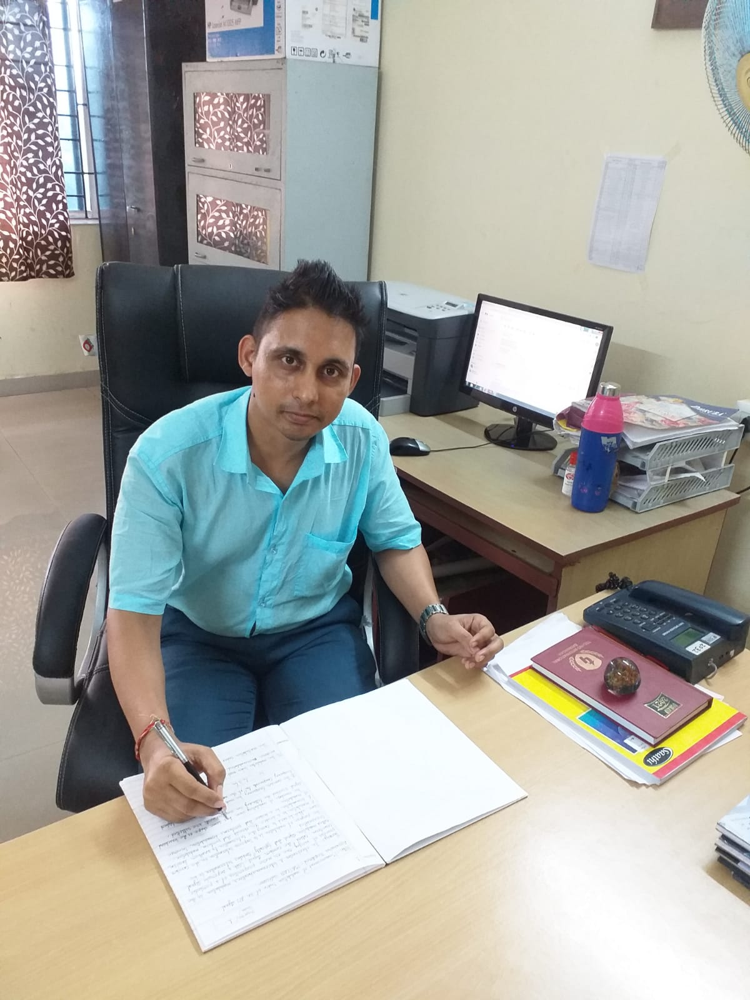

Suman Kumar Laha is currently working as an Assistant Professor in (Techno International Batanagar, A Unit of Techno India Group), Kolkata, India. He has completed his Ph.D (November, 30th, 2023) at Indian Institute of Technology (ISM) Dhanbad, India. He has done Master's ('14) from SDET- Brainware Group of Institution, Kolkata, India and Bachelor's ('10) from Netaji Subhash Engineering College, Kolkata, India. He has published his various Research Work & Skills in different reputed journals and conferences and filed Indian patent. He is also an author and a part time musician. He has deep devotion in Space and Vedic Science as well. He is a traveller and loves to visit various places to explore the nature.
Field of Interest: Performance and Efficiency analysis of Concentrated Solar Photovoltaic, Smartphone IoT application of the PV system, Mechanical structural integrity analysis of the PV module, Advance device making through IoT and Embedded system for real life application in Industry 4.0.
